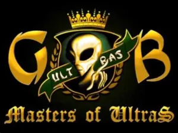
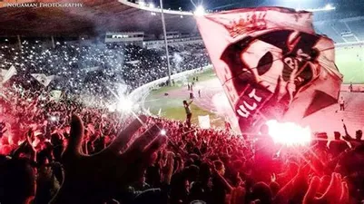
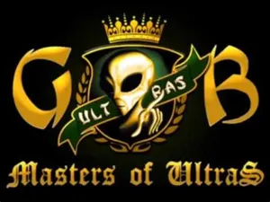
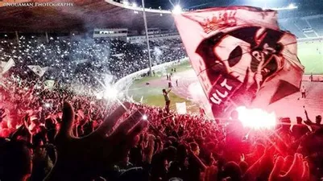
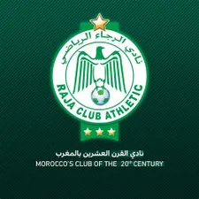
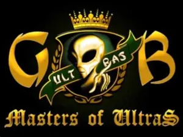
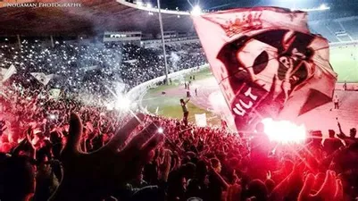

 Le Raja Club Athletic abrégé en Raja CA ou RCA est un club professionnel marocain de football basé à Casablanca, et l'une des sections du club omnisports éponyme, le Raja Club Athletic. Fondé le 20 mars 1949 par des nationalistes et syndicats marocains dans le quartier populaire de Derb Sultan3, le Raja CA est notamment célèbre pour les succès de sa section de football, très populaire au Maroc. Seule équipe, avec le Wydad AC, à n'avoir jamais quitté l'élite du championnat marocain dès son introduction en 1956, le Raja siège au Complexe sportif Raja-Oasis, effectue ses entraînements dans l'Académie du Raja CA et joue ses rencontres au Stade Mohammed-V depuis 1955.
Les Ultras forment une catégorie particulière des supporteurs assistant aux compétitions sportives, dont le but est de soutenir de manière fanatique son équipe de prédilection. Ce type de supporters est différent de celui des groupes Hooligans ou des Barra brava. Ils se retrouvent surtout dans le monde du football, mais existent également de manière sporadique en basket-ball, en handball, en volley-ball ou en hockey sur glace. Sébastien Louis définit les ultras comme étant les « jeunes supporters qui s'organisent au sein d'associations à but non lucratif pour soutenir activement leurs équipes de football à partir de la fin des années 1960. Ils encouragent les leurs au moyen de slogans et d'animations visuelles

| Nom: | |
|---|---|
| Prénom: | |
| Date de naissance: | |
| C.I.N | |
| Genre: | |
| Email: | |
| Ultras: | |
| Adresse: | |
| Langue: | |
| contacter nous pour plusieur infomation: | 06.25.68.35.88/06.26.38.53.91 |
| #Notre Devise: | SENZA PAURA ✌ |